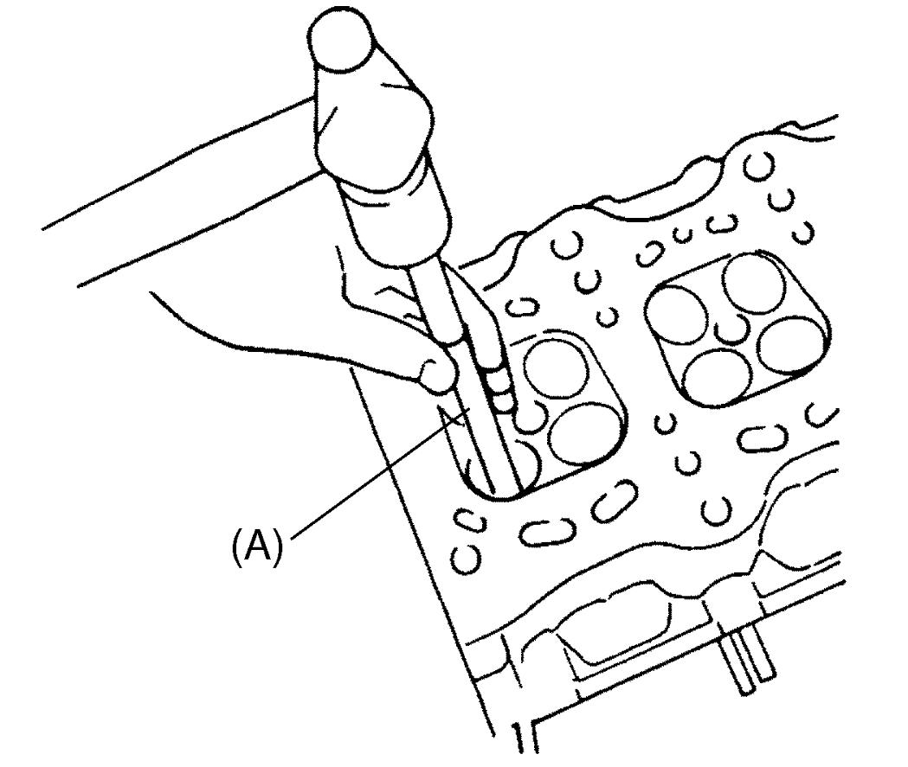

1D
| Valve and Cylinder Head Disassembly and Reassembly |
NOTE:

Valve (1) and valve spring (2) for intake and exhaust are not identical. Distinguish them before installing.
 "Expand image")
| [A]: | Intake | [B]: | Exhaust |
Disassembly
1)Place disassembled parts except valve stem seal and valve guide in order so that they can be installed in their original positions.
2)Using special tools (A) and (B), compress valve spring and then remove valve cotters (1) also using special tool (C).
 "Expand image")
3)Release special tools, and remove spring retainer and valve spring.
4)Remove valve to combustion chamber side.
5)Remove valve stem seal (1) and valve spring seat (2).

 "Expand image")
6)Using special tool (A), remove valve guide from combustion chamber side to valve spring side.
NOTE:
Heating cylinder head to 80 to 100 °C (176 to 212 °F) may facilitate valve guide removal.

 "Expand image")
Reassembly
NOTICE:
The engine could be damaged if shavings remain inside the valve guide hole after reaming it.
Thoroughly remove shavings from the reamed hole.
1)Before installing valve guide into cylinder head, ream guide hole with special tool to remove burrs and make the hole truly round.

 "Expand image")
2)Using special tools, install new valve guide to cylinder head as follows.
a)Uniformly heat cylinder head to a temperature of 80 to 100 °C (176 to 212 °F) so that it will not be distorted, and drive new valve guide into its hole with special tools.
b)For intake side, install new valve guide until special tool (B) contacts cylinder head.
After installation, check that valve guide protrudes from cylinder head by specified dimension “a”.
After installation, check that valve guide protrudes from cylinder head by specified dimension “a”.
Intake valve guide protrusion
“a”: 11.0 – 11.5 mm (0.4331 – 0.4528 in.)
 "Expand image")
c)For exhaust side, install new valve guide until special tool (D) contacts cylinder head.
After installation, check that valve guide protrudes from cylinder head by specified dimension “a”.
After installation, check that valve guide protrudes from cylinder head by specified dimension “a”.
Exhaust valve guide protrusion
“a”: 14.7 – 15.2 mm (0.5787 – 0.5984 in.)
 "Expand image")
3)Ream valve guide bore with special tools.
After reaming, clean bore.
After reaming, clean bore.
4)Install valve spring seat to cylinder head.
5)After applying engine oil to valve stem seal (1) and spindle of special tool (B), fit valve stem seal to spindle, and then install valve stem seal to valve guide by pushing special tool by hand.
After installation, check that valve stem seal is properly fixed to valve guide.
After installation, check that valve stem seal is properly fixed to valve guide.
NOTICE:
If the valve stem seal is installed by striking the special tool with a hammer or other similar tool, the valve stem seal may be damaged, causing oil to get down past the seal.
Push the special tool only by hand to force the valve stem seal into position.
 "Expand image")
6)Apply engine oil to valve stem seal lip and valve stem.
7)Install valve to valve guide.
8)Install valve springs and valve spring retainers.
Put longer valve springs to intake side and shorter ones to exhaust side. Position each valve spring (1) with its large diameter end (3) to the bottom (valve spring seat side) and the small diameter end (2) facing the top, and then put valve spring retainer.
Put longer valve springs to intake side and shorter ones to exhaust side. Position each valve spring (1) with its large diameter end (3) to the bottom (valve spring seat side) and the small diameter end (2) facing the top, and then put valve spring retainer.
 "Expand image")
| [a]: | Valve spring retainer side | [b]: | Valve spring seat side |
9)Using special tools, compress valve spring and fit two valve cotters (1) into groove in valve stem.
NOTICE:
Insufficient seating of valve cotters between retainer and valve stem neck may cause coming off of the cotters after engine start.
Check seating position of the cotters carefully when fitting them. Tapping of stem end with plastic hammer after fitting cotters will help confirmation of their seating.
NOTE:
Applying small amount of grease to valve cotters may facilitate the fitting.
 "Expand image")